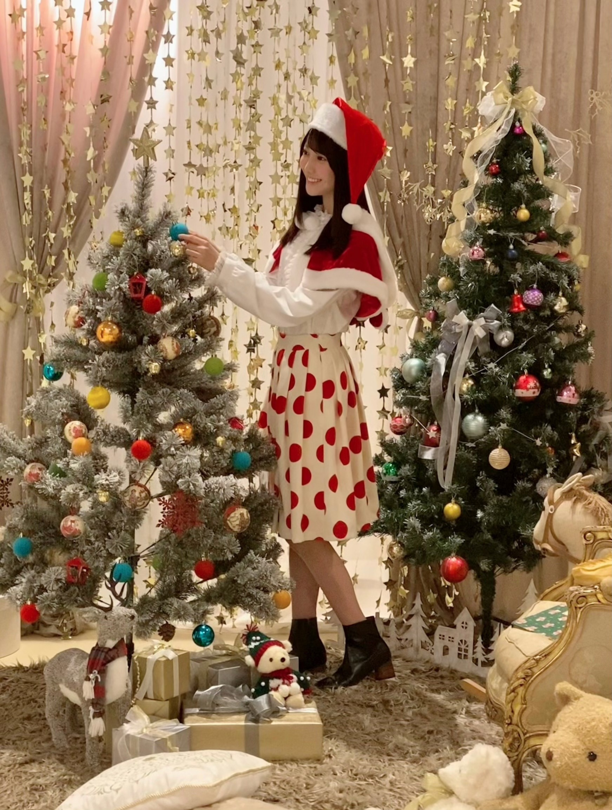
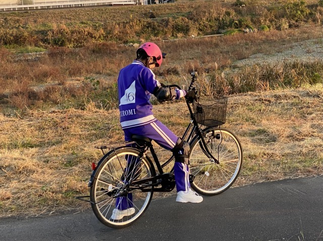

2020/1218Friサンタクローミ ☺︎ 黒見明香(16)
今年はサンタさん来るかなー？
毎日寒いけど... どうぞ頑張ってるあなたのとこに、
ココを見つけてくださり ありがとうございます♪
乃木坂46 ４期生の黒見明香です。
すこーしだけ自己紹介させてください☺︎
♪:*:･･:*:･･:*:･･:*:･･:*:･･:*:･♪:*:･･:*:･･:*:･･:*:･･:*:･･:*:･♪
黒見 明香（くろみ はるか）
2004年1月19日生まれ 16才
香港生まれ・東京都出身です
あだ名： くろみん・黒見ちゃん
3の倍数9・6・3(くろみ)
と覚えてもらえたら嬉しいです♪
【 乃木坂工事中 B級ニュース✨ 】
♪:*:･･:*:･･:*:･･:*:･･:*:･･:*:･♪:*:･･:*:･･:*:･･:*:･･:*:･･:*:･♪
⚫︎ヘルメットにカメラまで付けて、まるでお笑い芸人の体当たりロケのよう（笑）
⚫︎ちなみに私も自転車には乗れません。私を置いて行かないでください笑
読んでくださり、本当にありがとうございます☺︎
次回も、会えたら嬉しいなぁ✨
またねヾ(･ω･*)
くろみはるか☺︎
☆ 明日のあなたのラッキーナンバー：❸ と ❼
♪:*:･･:*:･･:*:･･:*:･･:*:･･:*:･♪:*:･･:*:･･:*:･･:*:･･:*:･･:*:･♪
・
・
・
＜ちょこっとアンコール♬笑＞
〜クロミ・ル・フィーユ〜
（クロ見るFeel YOU☺︎）
⚫︎クリスマス個別生写真見ました！緑のサンタさん、あの衣装の色はみんな決められたものを着ているんですか？もし、自分で緑を選んだのなら決め手を教えて欲しいです。
◯スタイリストさんマネージャーさんが選んでくださる時と、自分で選ばせていただく時があるのー！
⚫︎くろみんが真ん中から顔を覗かせたハート型オーナメント（ornament）はツリーに飾るのですか？
〇ドアにそのまま、リースの代わりに飾ってるよ〜！
♬ *。♩*。♬
⚫︎昨日早速「新解釈三国志」観に行ったんだ。三国志の武将では誰が好き？
◯良いですね〜すごく気になっています☺︎
君主の死後も、真っ直ぐ思いを持ち続けた、姜維さんが周瑜さんなどのエピソードに感動してしまいます〜
♬ *。♩*。♬
⚫︎お仕事頑張って。僕も「推し事」を頑張るねー
♬ *。♩*。♬
ジャルジャルさんのお勧め動画、サッカーの試合のお話も、花園行ったよなお話も、武術太極拳始めたよー!てお話も、銀河系エクレアのこと、しょっぱいカフェオレエピソード、ゲームぷよぷよ、ドラクエ5のこと、鬼滅の刃の漫画のこと、ヌンチャク式サイリウム話、蕁麻疹に虫除けしちゃったお話や、漢字の日の事、ふゆか話も、秋田の信号のお話、ドラマ危険なビーナス、35歳の少女、どんぶり委員長のこと、白毛馬のお話、ふたご座流星群見たよーや、8th BDブルーレイのお話も、目覚まし、雪遊びの頃、コンタクトや地雷メイクのリクエストも、チェキプレゼント祈願✨も、冬のデザートのお話も、沢山のコメント、本当にありがとう！
体調崩しちゃったよーて方も、寒さで声がガサガサだよ〜て方も、また足怪我しちゃったよー方も、(お大事にです><)、テストや面談、アルバイト、就活頑張ってる方も！最終列車まで頑張ったよーや京都出張だよー、体育持久走、ダイエット頑張ってるよーて方もファイトだよー！一緒に頑張ろうねー!!
Out of the blueラジオで聴いたよー、乃木フェスガチャ当たったよー！クリスマスカードGETしたよー！てお話も(嬉しいな☺︎ありがとう♡)、コメント反映されなくて、も一度がんばって書いたよー！て方も、前のブログに感想書いたよー！て方も(見たよー☺︎） ミーグリ増やしたよーや、いつの何部に行くよー(ありがとう、楽しみー!!) も、ワクワクしながら読ませていただいてるよ〜✨
アンダー楽曲やあの日 僕は咄嗟に噓をついたのこと、LiSAさん、Mrs.GREEN APPLEさん、Alexandrosさん、Novelbrightさん、SEKAI NO OWARIさん、大阪のNOAさんの曲、平井堅さん、サザンオールスターズさんの好きな曲や面白エピソード、米津玄師さんのお話、沢山の曲を教えてくれてありがとうヾ(･ω･*)o
頷いたり、驚いたりしながら読ませて頂いてるよー！送ってくれてありがとう (*ˊᵕˋ*)੭
そして、お誕生日を迎えるあなたへ・・
✨HAPPY BIRTHDAY✨
どうぞ素敵な一年になりますよう✩︎⡱
♪:*:･･:*:･･:*:･･:*:･･:*:･･:*:･♪:*:･･:*:･･:*:･･:*:･･:*:･･:*:･♪
ここまで読んでくださったアナタ、ほんとうにありがとう♡
またねヾ(･ω･*)
ホッとするあたたかい事が有りますように〜✨
金曜日だねー！今週もお疲れ様でした✩︎⡱
ココを見つけてくださり ありがとうございます♪
乃木坂46 ４期生の黒見明香です。
すこーしだけ自己紹介させてください☺︎
♪:*:･･:*:･･:*:･･:*:･･:*:･･:*:･♪:*:･･:*:･･:*:･･:*:･･:*:･･:*:･♪
黒見 明香（くろみ はるか）
2004年1月19日生まれ 16才
香港生まれ・東京都出身です
あだ名： くろみん・黒見ちゃん
3の倍数9・6・3(くろみ)
と覚えてもらえたら嬉しいです♪
頂いたコメントから↓
◎ 今まで貰ったクリスマスプレゼント、何が1番うれしかった？
お手紙ー (*ˊᵕˋ*)੭
小さい頃、夢の国で転んで怪我しちゃったことがあって...
そしたらクリスマスに、ねずみさんから
英語の「よくなりますように✨」っていう
おまじないのお手紙が届いたんだよ〜♬
わたしが泣いてたことも、頑張ってることも、、
知っててくれてるんだぁー...って ｡ﾟ(｡ﾉω＼｡)ﾟ｡
そんな"見ててくれる存在がいる"ことが
すごく嬉しくて、幼いながらにすごく印象に残ってるよ〜
＊
ここを読んでくださる大切なあなたからの
コメントやお手紙も、一番大切な宝物だよ((〃ω〃))
皆んなが大変な時や、しんどい時に、
あなたを応援する、そばで見守る存在になれるように...
少しでも元気や笑顔になれるように・・
憧れの先輩方を見習って、皆んなに教わって、
いっぱいいっぱい修行して、
頑張りたいなぁと思っています (*ˊᵕˋ*)੭✨フフ
♪:*:･･:*:･･:*:･･:*:･･:*:･･:*:･♪:*:･･:*:･･:*:･･:*:･･:*:･･:*:･♪

-:-:୨୧:-:- 乃木坂46リズムフェスティバルでも「Xmasキャンペーン」中だよ〜✨サンタクローミになってあなたのとこに行きたいな♡笑
⚫︎クリスマスのプレゼントは何もらいますか？小さい頃はサンタさんから何もらってましたか？？
小学生の頃、サンタクロースさんに
『願いが叶うステッキ（自分で描いた図解入り）』が
欲しいというお手紙を書きました。
いつも"世の中に無い"オリジナルなものを頼むので
サンタさんは悩んでいたようです・・・笑
サンタさんからのお手紙はココ☺︎笑↓
⚫︎ひとりでクリスマスを過ごす予定...淋しいよ〜
⚫︎コロナが流行ってるし友達とビデオ通話しながらご飯食べるかしたいなぁって思ってる！
皆んなが集まって楽しそうだと
寂しくなっちゃうよね><
ビデオ通話、素敵なアイディアだねー(*´-`)✨
クリスマスの日も、あなたとオンライン ミート＆グリート等出来たら良いのになぁ...て思っちゃったりするけれど、
少しでも楽しく、ホッとできるように...
わたしも皆んなのコメントやお手紙読んだり、
ブログ(お手紙)書いたりするね (*ˊᵕˋ*)੭♪
♬ *。♩*。♬
⚫︎ クリスマスと言えばケーキだけど、くろみんはどんなケーキが好き？？
クリスマスケーキは、上に乗ってる
クリスマスケーキは、上に乗ってる
お菓子の家（伝わるかなぁ...伝われ〜 (. ≧ω≦)ﾉ）が好きで、
あのお家の部分を食べていたよー☺︎笑
フルーツが好きー！ 皆んなの定番はイチゴ？チョコ？
ブッシュ・ド・ノエルとか作るのかなぁ。。？
スポンジ焼いて、生クリームのいちごのケーキは作ったことがあるよー！
⚫︎プレゼントを貰う側からあげる側になると、サンタクロースは本当にいるって分かるよ〜。そう感じるんだな。考えるな、感じろ！みたいな(笑)
深い・・・哲学的なアドバイスですね✨
乃木坂を囲んでくださる、大切な皆んなに会えたから、
サンタクロースはきっと。。。いてほしいなぁ...って信じたいです♡
「考えるな！感じろ」ですね☺︎笑
♬ *。♩*。♬
＊プチ情報＊
⚫︎Googleでクリスマスって調べて、サンタさんの帽子マークをタップすると、ゲームができるようになってるよ！
みんな知ってるのかな〜？私は初めて知ったよ〜！
楽しい情報、教えてくれてありがとうー (*ˊᵕˋ*)੭✨
♪:*:･･:*:･･:*:･･:*:･･:*:･･:*:･♪:*:･･:*:･･:*:･･:*:･･:*:･･:*:･♪
-:-:୨୧:-:- 今週のノギザカスキッツ、"アメリカンパーティー"がテーマで、メンバーそれぞれコーディネイト✨カチューシャしてみたよ〜✩︎⡱
【 しりとれ！HIP CATCH PARTY！② 】
⚫︎マチソワカン」では踊っていました、ノリノリ笑
あれは、難しい...にんじんジュースしか思い付きません
ねー！本編では"成功"で終えられたのですが・・・
しりとりはなかなかムズカシイデスネ( ´_ゝ`)
またいろんな言葉、覚えて、強くなって再チャレンジしたいです！笑
岩本蓮加さん♡カッコ良かったですね☺︎
⚫︎順番待ちでくるくる回ってる時のくろみんが、凄い楽しそうで好きです!
⚫︎編み込んであって、後ろから見ると形がハートみたいで可愛かった
⚫︎編み込んであって、後ろから見ると形がハートみたいで可愛かった
気付いて下さりありがとうございます✨！
モルックの絵が飾ってあったり、すごく拘ってくださっているので、もし良かったら細かいところも見てみてくださいねヾ(･ω･*)o
『ヒップキャッチパーリィィィ!!』(by DJ森田さん)
感が出たらいいなぁ。。と終始ノリノリになってみたよ〜笑
また、次回のスキッツも楽しみですね〜！
【 乃木坂工事中 B級ニュース✨ 】
⚫︎最近の年末定番企画になってるB級ニュースはやっぱり面白いね。
⚫︎くろみんにとっての今年のB級ニュースは何ですか？
⚫︎くろみんにとっての今年のB級ニュースは何ですか？
毎年最高ですよねー！
「もうこの季節なんだなぁ...」って感じますよね♬
次回、来年の抱負と共に発表できるかな！？
アホあほな黒歴史も増えているので、
５日後楽しみに？待っててね (*ˊᵕˋ*)੭ 笑

-:-:୨୧:-:- 明日夜 22時〜放送だよ〜((〃ω〃)) 初めての自転車に七転八起・・・Σ（ﾟдﾟll）汗
【 乃木坂46山崎怜奈とおはつちゃん
＃17 『自転車に乗りたい！』 】
いよいよ＜明日12月19日夜 22:00〜＞
ひかりTV ・dtvチャンネルさんで、
初めてのチャレンジが放送予定です。
＊
⚫︎くろみんの乃木坂ジャージ姿って初公開かな？
そうなのですー！
実は、初めての「乃木ジャー」で、
名前が入ってることに感動していました。
・・・も束の間・・・
⚫︎ヘルメットにカメラまで付けて、まるでお笑い芸人の体当たりロケのよう（笑）
体当たりでした〜 (*ˊᵕˋ*)੭ふふ
寺田蘭世さん♡が乃木坂工事中で
チャレンジされていらした姿を思い出しながら、
初めてのロケ、初めての出演・・・
全力で戦ってみましたー\(//∇//)\恥ずかしい...
⚫︎ちなみに私も自転車には乗れません。私を置いて行かないでください笑
コツや、こんな新しい方法が！？という体験もしたので、
良かったら、一緒に頑張ろうねー ( . ≧ω≦)ﾉ
⚫︎流石にこの年齢になって乗れないのは恥ずかしいから番組できっと乗れてるだろうなぁーと思って楽しみにしてます笑 できてるよね？笑
えーと・・・・
楽しみにしててくださいね\(//∇//)\ドキドキ汗
明日ぜひ！良かったら笑いあり、涙あり！？♬
♪:*:･･:*:･･:*:･･:*:･･:*:･･:*:･♪:*:･･:*:･･:*:･･:*:･･:*:･･:*:･♪
-:-:୨୧:-:- 続・ 発売中の「週刊ヤングマガジンNo.2・3号」さまのオフショット、アホな写真シリーズだよ〜\(//∇//)\笑
⚫︎沢山のオフショット頂戴！本当に雑誌に載ってる写真は少なすぎて勿体ないよ〜
リクエストありがとう〜☺︎
実は・・・マネージャーさんと、待ち時間にパーカーで遊んでみたり、
この格好で、ブルース・リーさんのモノマネを撮ったりしていました(*´-`)
そんなオフショットの一コマです笑
あたたかい雰囲気で、リラックスさせてくださって
自然な表情を撮ってくださる皆さまに心から感謝しています✨
【 オンライン ミート＆グリート♡（個別トーク会）】
⚫︎今日は子供が櫻の新２期生のメンバーとミーグリしてたの。リラックスして素の姿が見られたって喜んでました。
⚫︎63歳ですが、初めてトークできるのが楽しみです。よろしくお願いします。
⚫︎63歳ですが、初めてトークできるのが楽しみです。よろしくお願いします。
大切な皆んなとお話しできるの、本当に楽しみです!!
今から、すごく心待ちにしていますー (*ˊᵕˋ*)੭
⚫︎らじらーで開発した「クロミーアキャット」や「くろみにゃん」や「くろみんpossible」
などの必殺技の使用も楽しみにしています。
⚫︎くろみんの照負倶楽部も見たかったなー。ミーグリでリクエストしてもいいですか？（笑）
などの必殺技の使用も楽しみにしています。
⚫︎くろみんの照負倶楽部も見たかったなー。ミーグリでリクエストしてもいいですか？（笑）
もちろんだよー！
必殺技の練習も☺︎笑、洋服も、髪型も、ウインクの練習も
楽しみでいっぱいしてるので、どうぞ気軽に
ちょこっと覗きに来てくれたら嬉しいなヾ(･ω･*)o
会えるのを、すごく楽しみにしています♡
♬ *。♩*。♬
【乃木坂46 アンダーライブ 2020✩︎⡱ 】
♬ *。♩*。♬
【乃木坂46 アンダーライブ 2020✩︎⡱ 】
いよいよ今夜から！！
⚫︎久しぶりだから、サイリウムの光を見ただけで感動しそうな気がする...寒いけれど、心は熱く、スティックバルーンで応援します(*'ω')
⚫︎次は観客の前でパフォーマンスできるといいね。その時は同じ空間に入れるといいなぁ。
ワクワクしますね！
ついに、先輩方も、皆んなの姿・応援に大きなパワーを貰ってらっしゃることと思います✩︎⡱ どうぞ楽しんでくださいねー！（皆んなと会える一歩だと願って✨）
オンライン組も、もちろん！いよいよスタートですね♬
① 12月18日(金) 開場 16:30 ／ 開演 18:00 《ライブ配信予定》
② 12月19日(土) 開場 16:30 ／ 開演 18:00 《ライブ配信予定》
③ 12月20日(日) 開場 16:30 ／ 開演 18:00 《ライブ配信予定》
わたしも観ますよー!!『熱いアンダーライブ』
一緒に盛り上がりましょうね〜 (*ˊᵕˋ*)੭
♪:*:･･:*:･･:*:･･:*:･･:*:･･:*:･♪:*:･･:*:･･:*:･･:*:･･:*:･･:*:･♪
ブログやお手紙で、たくさんのコメントや感想送って下さり
本当にありがとうございます✩︎⡱
初めてブログ読んでコメントしたよー！というあなたも、
何回目のコメントだよー！と教えてくださるあなたも、
大切な時間を使ってお話しして下さり
本当にありがとうございます✨
あなたに出逢えた奇跡に、感謝しながら、
大事に、一つずつ全部読ませて頂いています((〃ω〃))
皆さんのことを知ることが出来る、
私の１日の中で『１番幸せな時間』です♩
いよいよ１月から！初めての個別トーク会で、
直接お話しできる時が、 今からとっても待ち遠しいです✩︎⡱
＊
ブログやお手紙で、たくさんのコメントや感想送って下さり
本当にありがとうございます✩︎⡱
初めてブログ読んでコメントしたよー！というあなたも、
何回目のコメントだよー！と教えてくださるあなたも、
大切な時間を使ってお話しして下さり
本当にありがとうございます✨
あなたに出逢えた奇跡に、感謝しながら、
大事に、一つずつ全部読ませて頂いています((〃ω〃))
皆さんのことを知ることが出来る、
私の１日の中で『１番幸せな時間』です♩
いよいよ１月から！初めての個別トーク会で、
直接お話しできる時が、 今からとっても待ち遠しいです✩︎⡱
＊
大雪で大変な地域の方、どうぞくれぐれも身体を大事に
気をつけてくださいねー！
いよいよ年末が近付いてきて、仕事や勉強が忙しかったり、
なんだか体調イマイチだよー、疲れちゃったよーって方も
本当に、お疲れ様でした✩︎⡱
きっと心も、身体も、しんどい時もあるかと思います。。
どうぞ、皆さんが 少しでも
ひとときリラックスできますように...✩︎⡱
と願っています(*´-`)
初めて会える日を、楽しみに待っています♪
＊
明日は、笑顔も大好きな璃果ちゃんですよ〜♬
いよいよ年末が近付いてきて、仕事や勉強が忙しかったり、
なんだか体調イマイチだよー、疲れちゃったよーって方も
本当に、お疲れ様でした✩︎⡱
きっと心も、身体も、しんどい時もあるかと思います。。
どうぞ、皆さんが 少しでも
ひとときリラックスできますように...✩︎⡱
と願っています(*´-`)
初めて会える日を、楽しみに待っています♪
＊
明日は、笑顔も大好きな璃果ちゃんですよ〜♬
読んでくださり、本当にありがとうございます☺︎
次回も、会えたら嬉しいなぁ✨
またねヾ(･ω･*)
くろみはるか☺︎
☆ 明日のあなたのラッキーナンバー：❸ と ❼
♪:*:･･:*:･･:*:･･:*:･･:*:･･:*:･♪:*:･･:*:･･:*:･･:*:･･:*:･･:*:･♪
・
・
・
＜ちょこっとアンコール♬笑＞
〜クロミ・ル・フィーユ〜
（クロ見るFeel YOU☺︎）
本編が長くなってしまったので、
沢山いただいた質問は次回答えさせてね！
５日だけ待っててねっ (*ˊᵕˋ*)੭✨
♬ *。♩*。♬
⚫︎クリスマス個別生写真見ました！緑のサンタさん、あの衣装の色はみんな決められたものを着ているんですか？もし、自分で緑を選んだのなら決め手を教えて欲しいです。
◯スタイリストさんマネージャーさんが選んでくださる時と、自分で選ばせていただく時があるのー！
緑大丈夫かなぁ。。てドキドキだったけれど、嬉しいです！ありがとうー☺︎
♬ *。♩*。♬
♬ *。♩*。♬
⚫︎くろみんが真ん中から顔を覗かせたハート型オーナメント（ornament）はツリーに飾るのですか？
〇ドアにそのまま、リースの代わりに飾ってるよ〜！
どうぶつの森の自分の家にもハート型の「キュートな看板」を付けていて、似ててなんだか嬉しいなぁって思ってるんだー(*´-`)笑
♬ *。♩*。♬
⚫︎昨日早速「新解釈三国志」観に行ったんだ。三国志の武将では誰が好き？
◯良いですね〜すごく気になっています☺︎
君主の死後も、真っ直ぐ思いを持ち続けた、姜維さんが周瑜さんなどのエピソードに感動してしまいます〜
♬ *。♩*。♬
⚫︎お仕事頑張って。僕も「推し事」を頑張るねー
◯素敵な言葉ー！ありがとうございます✨
一緒に頑張ろうね〜ヾ(･ω･*)o
♬ *。♩*。♬
＜ゲームコーナー♪＞
⚫︎ くろみんは１位継続出来ているといいなぁと思いました。
あと投手部門のタイトルは最多奪三振意外４冠です。
◯わたしは1位だったよ！！ありがとう！
個人成績は、首位打者、最多本塁打、最多打点、最多盗塁、最優秀防御率、最多勝利、最優秀中継ぎ、最多奪三振で1位だったよ！
⚫︎ もしかしてプロスピのキャプテンくろみんと同じ人かも！
プロスピ交流戦ぼくも、リーグEでした！
でも、順位は全然ダメです笑
⚫︎プロスピAめちゃくちゃ惜しかった......
グループDでした
◯同じ人なの嬉しいな☺︎
プロスピ交流戦お疲れ様！
リーグも一緒だね！！
⚫︎ くろみんはプロスピで最近ミキサーかけた？
◯ここ2週間くらいはミキサーかけてないよー！
今度かけたらまたいうね！
⚫︎ 分プロスピaやってるんですけど、一緒に対戦してくれると嬉しいです、一緒にプロスピaやりたいです。
◯いつかあなたと一緒にプロスピできる機会があったらいいよね！わたしもやりたいな☺︎
⚫︎ 最近、プロスピのアプリを始めたばかりです
◯同じゲームやってるって思うと嬉しいな！
最初大変かもだけど、一緒に頑張ろうね☺︎
⚫︎ プロスピのリアタイ最近やってますか？
◯最近はイベントとVロードやってたから、リアタイあんまりやってないよ〜！
⚫︎リアタイやってるんですけど勝てない試合が多いです。どうすればいいでしょう笑笑
◯ストレートとか真っ直ぐを待つのも手だと思うよ！あとは縦の変化球とかかなぁ〜！
もしなんかコツあったらみんな教えて欲しいな！
⚫︎ プロスピ自分やっと覇王なったから覇王で待ってるね！
◯すごいね！まずは覇王おめでとうわたしもなれるように頑張ります！！
⚫︎ 打つときについついタップするときに力が入ってしまいます(;・∀・)
ホームランが全然打てないです・・(*_*)
何かコツがいるのでしょうか？？
◯わたしも、一生懸命ホームラン打とうと思うと、力が入っちゃうからリラックスして打とうと思わないでやるといいかも！
あとは、変化球とかでも甘いところに入る球を待つっていうのも実践してみるといいかも！
⚫︎ そして、プロスピ今日からは新しいイベントだね。
打席に入る前とかの映像もリアル野球BANが再現されてて面白かったなー。
くろみんも是非体験して欲しいです。
◯うん！わたしもイベントやってるよ〜！すごいイベントだよね！わたしも体験してるよ！
⚫︎ 野球の話になるけど、珍プレー好プレー見た時に思ったけどくろみんが印象に残る珍プレーある？
◯珍プレー集はどれも面白くて印象に残ってるから絞れないよー！
なにかあなたのおすすめある？
⚫︎ ボードゲームをやっていたとのことですが、チェスや将棋なども得意だったりしますか？
◯中学の時に英語部で英語版の人生ゲームとかはやってたけど、チェスとか将棋とかあんまり得意じゃないからまた教えて欲しいな〜☺︎
⚫︎ 黒見ちゃんは｢桃太郎電鉄｣した事ありますか？
⚫︎さぁちゃんと「桃太郎電鉄」やってる？
◯桃太郎電鉄持ってないからまだやったことないよ〜！
今度やってみたいな☺︎
⚫︎ あと乃木フェスのクリスマスのガチャ、黒見ちゃんのカード引けるように頑張るね！
◯うん！ありがとう☺︎
出てくれるといいな！！
⚫︎どうぶつの森」では、雪だるまが上手く出来ません。助けて!(笑)
くろみんも作ったりしてますか？
◯うん！作ってるよ！
わたしも完璧な雪だるま作るのに苦労してるよ、、一緒に頑張ろう☺︎
⚫︎私もゲームほしいなーって思います。うちの家はゲーム禁止なので、やったことがありません泣
◯そうかぁ、、私もゲームばっかしてないで、と時々言われるよ\(//∇//)\
学生頑張って時間ができたときに、息抜きとかで楽しんでくれたら嬉しいなぁ。。
乃木坂や好きな音楽で、元気出してくれたら嬉しいなぁ✨
♬ *。♩*。♬
ジャルジャルさんのお勧め動画、サッカーの試合のお話も、花園行ったよなお話も、武術太極拳始めたよー!てお話も、銀河系エクレアのこと、しょっぱいカフェオレエピソード、ゲームぷよぷよ、ドラクエ5のこと、鬼滅の刃の漫画のこと、ヌンチャク式サイリウム話、蕁麻疹に虫除けしちゃったお話や、漢字の日の事、ふゆか話も、秋田の信号のお話、ドラマ危険なビーナス、35歳の少女、どんぶり委員長のこと、白毛馬のお話、ふたご座流星群見たよーや、8th BDブルーレイのお話も、目覚まし、雪遊びの頃、コンタクトや地雷メイクのリクエストも、チェキプレゼント祈願✨も、冬のデザートのお話も、沢山のコメント、本当にありがとう！
一つ一つ、大切に読ませて頂いて、メモさせていただいてるよ〜 (*ˊᵕˋ*)੭
体調崩しちゃったよーて方も、寒さで声がガサガサだよ〜て方も、また足怪我しちゃったよー方も、(お大事にです><)、テストや面談、アルバイト、就活頑張ってる方も！最終列車まで頑張ったよーや京都出張だよー、体育持久走、ダイエット頑張ってるよーて方もファイトだよー！一緒に頑張ろうねー!!
Out of the blueラジオで聴いたよー、乃木フェスガチャ当たったよー！クリスマスカードGETしたよー！てお話も(嬉しいな☺︎ありがとう♡)、コメント反映されなくて、も一度がんばって書いたよー！て方も、前のブログに感想書いたよー！て方も(見たよー☺︎） ミーグリ増やしたよーや、いつの何部に行くよー(ありがとう、楽しみー!!) も、ワクワクしながら読ませていただいてるよ〜✨
アンダー楽曲やあの日 僕は咄嗟に噓をついたのこと、LiSAさん、Mrs.GREEN APPLEさん、Alexandrosさん、Novelbrightさん、SEKAI NO OWARIさん、大阪のNOAさんの曲、平井堅さん、サザンオールスターズさんの好きな曲や面白エピソード、米津玄師さんのお話、沢山の曲を教えてくれてありがとうヾ(･ω･*)o
頷いたり、驚いたりしながら読ませて頂いてるよー！送ってくれてありがとう (*ˊᵕˋ*)੭
♬ *。♩*。♬
そして、お誕生日を迎えるあなたへ・・
✨HAPPY BIRTHDAY✨
どうぞ素敵な一年になりますよう✩︎⡱
♪:*:･･:*:･･:*:･･:*:･･:*:･･:*:･♪:*:･･:*:･･:*:･･:*:･･:*:･･:*:･♪
ここまで読んでくださったアナタ、ほんとうにありがとう♡
またねヾ(･ω･*)
2020/12/18 18:06

PROFILE
新4期生リレー
202104
| SUN | MON | TUE | WED | THU | FRI | SAT |
|---|---|---|---|---|---|---|
| 1 | 2 | 3 | ||||
| 4 | 5 | 6 | 7 | 8 | 9 | 10 |
| 11 | 12 | 13 | 14 | 15 | 16 | 17 |
| 18 | 19 | 20 | 21 | 22 | 23 | 24 |
| 25 | 26 | 27 | 28 | 29 | 30 | |

コメント(229)
ゆっくり読みます笑！
金曜日がやってきた〜
クリスマスがもうすぐで来る〜
2020年も終わりやね…
2021年も頑張ろ
うわーー、こういうときの手紙は本当に力になるよね(´；ω；｀)感動
いや～、そう言われると、本当にくろみんにファンレターを送りたくなるよ(｡>﹏<｡)
うわーー、サンタクロミ可愛い(｡>﹏<｡)♡♡♡
コロナに関係なく今年も一人のクリスマスなんだけど、
当日SHOWROOM配信をしないかな～？(;_;)
プチ情報知らなかった(ﾟдﾟ)！凄いね♪
ノギザカスキッツ凄く面白かったよ
黒ニット可愛かった(*´ω｀*)
くろみんのあほあほ黒歴史大好きだけど（笑）
個人的にのB級ニューズは、一番笑ったメンバーのブログ文章は
やっぱりくろみんの「リコーダー水遁」の話（笑）
明日のおはつちゃんめちゃくちゃ楽しみ＼(^o^)／
また次回でリアル水遁の術を挑戦してほしいなあ（笑）
でも4期生が加入したから、自転車乗れない子沢山いるよ
蘭世から、くろみん、ゆりゆり、みっちゃん、るなぴ
全然恥ずかしいことではないと思うけど
きゃーー、短パンパーカーくろみん可愛すぎるよ(｡>﹏<｡)♡♡♡♡♡
本当にオフショットで勿体ないよ(｡>﹏<｡)
そして、珍しくWはピースではない(ﾟдﾟ)！（笑）
って、私が書いた「勿体ない」コメントじゃん(*´ω｀*)♪（笑）
ああ、そのときの動画を見たいなあ(｡>﹏<｡)（笑）
アンダラ、一緒に楽しもうよ＼(^o^)／♪
くろみんの応援してる姿が気になる(*´ω｀*)
・ああ、くろみんの生写真がみたいなあ(｡>﹏<｡)
ゲームコーナーあいかわらず読んでるけど、何の話がさっぱり ﾎﾟｶｰﾝ（笑）
これからも頑張って(/･ω･)/
早く、明日のおはつちゃんを見たい(*´ω｀*)動いているくろみんの姿を見たい((o(´∀｀)o))ﾜｸﾜｸ
僕もアンダラ見ます！！
楽しみですね！！
くろみんスタイル良すぎて眩しいです！
自分はTWICEさんも好きなのですが好きな曲ありますか？？自分はBDZが好きです！！
くろみんが野球の話してくれるととても嬉しくなります！！練習がんばります！！
いつもありがとうございます！
サンタクローミかわいすぎやん！笑
そろそろクリスマス。楽しみやね。
乃木フェスもイベント開始！
今回もくろみん推しメンで頑張ってます！
明日からは乃木恋もイベント始まるから、忙しい！！
イベントも楽しみつつ、今年は遊びに行かれへんからお家でゆっくりクリスマス楽しもう！
ノギスキ見た！
本編では難なく成功やと思ってたけど、Huluの方見たらしっかりダンスされてましたね。笑
ダンスかわいかったで！
あのしりとり急に来るから難しそう。
次回リベンジできたらいいねー！！
ついに明日のおはつちゃん！
くろみんの初自転車！
どんな感じなんか楽しみすぎる笑
乃木ジャージ姿のくろみん見れるのも嬉しい。
放送楽しみにしてるね。
アンダラは配信参戦中です！
3日間あるからどの日も楽しみやね。
今の時点でセトリ良すぎて泣きそう。
くろみんも楽しもね！
ではでは体調には気をつけて。
次のブログも待ってます。
いつもありがとう。
ブログの更新ありがとうʕु•̫͡•ʔु ✧
今年のクリスマスは
映画『えんとつ町のプペル』公開日だけど
この映画知ってるかな？
めっちゃ、おすすめだよ〜
クリスマスが近づいてくるね！私はというと、大学の課題に追われています（汗）締め切りがクリスマスまでで教授たちはブラックサンタなのかも？？笑
今は化学の勉強をしてるよ！笑
先週、櫻坂の大沼晶保ちゃんとミーグリやってきました！今週もあるから黒見ちゃんのお話もしてみようかな〜！！
黒見ちゃんのミーグリ が楽しみすぎてなんでも頑張れてる！
寒い日が続くけどお仕事頑張ってね！
私もあと1日学校がんばります！！
次回のブログも楽しみにしてるねー！！
前のコメントにも書いたけど明日の
おはつちゃん楽しみにしてるね！
毎年年末になると1年ってほんとに
あっという間だなーって感じるけど
くろみんはどうかな？
プロスピの交流戦で1位おめでとう！！
自分は4位で5個タイトル取ったよ
今はイベントやりながら年末のガチャや
B9&THを待ってる感じだよー
寒さが厳しくなってきたけど体調には
気をつけてね！
こないだ晩ご飯に豚汁を食べたんだけどめっちゃ美味しくてどうしても報告したくなったんで今します笑
もうすぐ年明けが迫っているはずなのに全然そんな気がしないんだけどみんなそうなのかな？黒見ちゃんはもうすぐ2020年も終わるなぁーって感じてる？
寒さが厳しくなってきたけど風邪ひかないように気をつけてね！
ありがとうございました！
質問
最近乾燥しがちで手がカサカサになっちゃうんだけどおすすめのハンドクリームとかありますか？
大学生の僕にもサンタさんは来ますかね？笑
今一番欲しいもの！
病院に入院したので、病室から黒見ちゃんのブログを読みました。
いつも楽しいブログをありがとう！
あと、10日ほどで退院の予定です。
黒見ちゃん、体調に気をつけて頑張って下さい。
最近色んな人がオススメの音楽があるみたいですが、自分は以前に小室哲哉さんがいたTM NETWORKをオススメしました！
しかし、今回は高山一実さんも好きなバンド、UVERworld(ウーバーワールド)を紹介させてください。
UVERworldは、生と死や心など、色んなテーマを歌っています。
オススメはThe Over
クオリア
哀しみはきっと
です。
ベストアルバムもあるので、この三曲は入ってますので聴いてみて欲しいです。
因みに高山一実さんは、ゼロクワイアです。
もう変わったかもしれませんが。
では、またお話しさせてください。
ゲームの話、載っけてくれてありがとうー！
今日からアンダーライブですね！
私は愛知に住んでいるので行けませんが、、、
バースデーライブのように早く生で見られたらいいなー！って毎日思ってます！
体に気をつけて頑張ってください！
コメント、失礼します！
ブログ更新、ありがとう！
お手紙が一番嬉しいクリスマスプレゼントだなんて、やっぱり心が清らかですね。
自分は実利を求めてしまうので、高いゲームを貰ったときが一番嬉しかった笑笑
ただ、コメントが宝物と言ってくれるのはめちゃくちゃ嬉しいです。
今でも十分笑顔を与えられてると思うけど、向上心を持って頑張ってくれてると思うから、自分も応援したいです。
クリスマスケーキの上にお菓子の家的なのが乗っかってるんだ。
自分の家ではクリスマスにケーキを食べる習慣が無かったから、仕組みがあまり分からないのよ笑笑
フルーツが好きなのは分かるわー。
小さい頃は甘いクリームが好きだったけど、年齢を重ねると生クリームだけだと胃がもたれるようになっちゃって。
イチゴとかの適度な酸味もあるフルーツの有り難みを感じています笑笑
Googleのゲーム、知らなかった！
早速パソコンで「ガムボールティルト」というのをやってみたけど、結構難しいね。
不器用な自分は大分苦労しました笑笑
それでは、この辺で。
おやすくろみんー
僕は中森明菜さんの禁区が好きで良い曲なので聴いてみてください。
見た感じクリスマス個別自分で選んだ感じなのかな？！
緑のサンタクローミ可愛いからもちろん購入しました( ᵕᴗᵕ )
前にくろみん宛にファンレター送ったけどその時からくろみんに報告したいことたくさん増えたからまた送ろうかなー！
届いたら見てくれたら嬉しいな☺︎︎
ノギザカスキッツ凄い楽しそうで可愛かったー！！
くろみんのとこでnice出てて見てて嬉しかった！
キュートなくろみんもセクシーなくろみんも最高でした☺︎
クリスマスケーキはやっぱチョコケーキかなー！
でも1番好きなのはケーキにのってるいちごかな！
いちごは小さい頃風邪ひいた時に絶対食べてたの！
食べれば風邪は治るし元気出るしって最強な食べ物だと思ってたんだー！
【くろみんに質問です！】
くろみんはサンリオのクロミちゃん好きですかー？
それとも他にも好きなキャラとかいますか？！
教えてくれたら嬉しいです☺︎
米津玄師さんにハマりたいなら、ヤンキーというアルバムをおすすめするよ！！
ぜひ聞いたら、どの曲が良かったとか質問コーナーで感想を教えてください！！
ノギザカスキッツまちそわかのくろみんのダンス可愛かったなー
改めてくろみんの笑顔をほんとしあわせな気持ちにさせてくれるから大好きだよ！
乃木フェスでくろみんサンタさんが１回で当たりました。
もう狂喜乱舞×46で今年一番の嬉しい出来事でした。
やったー＼(^o^)／やったー＼(^o^)／
嬉しすぎてコメントを書かずにはいられませんでした(^-^)
ブログ更新ありがとう！
くろみんとツリーの写真は
くろみんの笑顔が可愛すぎて～
きっと子供の頃もこんなに可愛く
クリスマスを楽しんでいたのね♡
くろみんを見ていると私も幸せな
気持ちになれるの♡
ありがとう♡くろみん
くろみんはスタイルが良くて
手も足も細くて長くて～
憧れちゃう♡
どんな洋服も似合うので
モデルさんとして雑誌で
いっぱい見たいな～
次回のブログまで５日間待ってるね♡
年内は.. 次は カレンダーのペン立ての分かな
来年は ライブの分が あるよ〜 ♪~
初出しエピソードの 緑のカスタムちゃりの話.. ぴえん
寒さを吹き飛ばす温かいことがありますように
ファイティン!
応援してるよ ️
サンタ明香ちゃん可愛い(〃^ー^〃)
明日も明香ちゃんにHappyを
お休みなさい(^-^ゞ
ここ数ヶ月コメントできなくってごめんね(><)
忙しくてコメントできなかったけど、ブログは毎回欠かさずに見て元気もらってるよ☺︎
4期生ライブもすっごく良かったよ〜
それから、くろみんの963にかけてTwitterのツイート数が963になったの！
963になったツイート内容がくろみんのブログのRTで嬉しかったな⸜❤︎⸝
お祝いありがとうございます！16歳になりまして、抱負としては、黒見ちゃんみたいな優しい子になれるようにがんばりたいです！
サンタクローミかわいいよー！ 乃木フェスで、ガチャ引いたけど、黒見ちゃんのカード出なかった(ﾟ◇ﾟ)ｶﾞｰﾝ
来月は、黒見ちゃんのお誕生日だねー！ ダイヤためまくります！
イベント5000位以内に入りたいなー！
質問です！
雪を見るとテンションあがるタイプですか？
私は、テンション凄くあがります！ 高校行くときに降っていてテンションあがりまくってました笑
お体にお気をつけてお過ごしください！
また書き込むねー！
またねー！
ミーグリ券取ったよ〜♥
いっぱいはなそうねハート
早いなぁ.. そして また次の日 年を..
そういや あと一ヶ月あまりで くろみんもやな 。。
まあ 早めに 済ませちゃったけど 笑（╹◡╹）
濃密なブログ更新ありがとうございます！！
コロナ禍で今年は違う雰囲気ですが、
通常の年の今頃の、クリスマス前の華やぎが大好きです。
街が全体的に優しく感じられるのが良いのです。
クリスマスと聞いて真っ先に浮かぶ映像は、
「ショーウインドーに張り付いて、
ほしいものをずっと見ている子供」
ですｗ
伝わるかな？
黒見ちゃんが自転車なら、僕は自動車の話。
免許を取って以来、純粋ぺーバードライバーの
自分ですがｗ、
身分証明にしか使わなくても
更新の手続きをしなくてはなりません。
めんどくさくて期限ぎりぎりになりがちでしたが、
今回は早めに行ってきました。
手続きが前回よりわかりやすくなっていて
ちょっとびっくり。
こういう部分も進歩しているんですね～～
サンタさんは今、プレゼントのラッピングで忙しい時期じゃないでしょうか。あとケーキと言えば、最近はイチゴショートやチーズケーキばかりなので、久々にチョコレートケーキ食べたくなりました。
新4期生もTV,ラジオの出番が増えてきましたね！！コロナ禍で活動できなかった分を取り戻すくらいの活躍です。コロナの第3波は想像以上の厳しさですが、ワクチン投与までの辛抱です。皆頑張ろう。
ではまた。
リモートでいいから来て欲しいね～♪
プロスピのワールドスターは引きましたか？
あまりクリスマスなどのイベント事を積極的にする家庭ではなかったので、ざっくりだったのかも。
昔はクリスマスは特に何もしない家も結構あったので、それでも良い方だったのかもしれませんね。
サンタクローミ可愛い。
もうクリスマスやね！ 私はフルーツケーキとかチーズケーキとかが好き
アンダーライブ見る予定だよ～！
愛媛県在住 中３女子 れいちゃんずより（音から変えたよ！）
追伸：今日も一日お疲れ様！
サンタクローミ、かわいい！
赤のドットのスカート？似合ってるよーー
ケーキの質問、ありがとうね！！うれしい(*´▽｀*)
お菓子の家、伝わるよ！
デコレーションの上に乗ってるやつだよね？？
自分はああいうの最後まで食べられず大事に取っておいたら妹とかに先に食べられちゃうタイプだったかも(笑)
定番のいちごショート、チョコ、全部好きだよ～^^
フルーツ系も捨てがたいよね
またケーキづくりしたら教えて！
おはつちゃん、初乃木ジャーはうれしいね！
自転車の後ろ姿、「大丈夫～」って声かけたくなるよ・・
楽しみにしてるね！
今アンダーライブのアフター配信観てるよ
ライブが実現して感謝です
くろみん、新4期のみんなとも会える第一歩だね、少しずつ物事が進んでいけばいいね
いつもありがとう！
またねー
くろみん今日も可愛いです。
くろみん今日も１日お疲れ様です。
今日はお仕事でした。
今日は疲れて大変でした。
明日もお仕事です。
今日から六連勤頑張ります。
最近は寒くなって来てるので体調を崩さないように気を付けてください。
自分も体調を崩さないように気を付けます。
これからもお仕事頑張って下さい。
自分もお仕事頑張ります。
これからのブログを楽しみにしてます。
徐々に今年も年末に近づいているねぇ～。そして・・・・・・寒い！寒すぎる(笑)＼(◎o◎)／！僕の下半身不随という体も、毎日悲鳴をあげております(´・ω・`)
今日のブログタイトルを見て、「くろみんかぁ～。その手があったか！」Σ(･ω･ﾉ)ﾉ！ って思わず、納得してしまった僕が居たんだけどぉ～？(笑)( *´艸｀) どうしてくれますねん(笑)
サンタクロース改め「サンタクローミ」って( *´艸｀)・・・・・・面白いやないかぁ～いヽ(^o^)丿
くろみんたちも、もうすっかり「新４期生」から「４期生」と名乗っているね( *´艸｀) 僕はその時をどれほど待ち望んだことか。
今までは、同期である１１人に対しても「１年半育ててくれた４期生」という事もあって、ほんの少し距離感があったけど、今では「４期ちゃんＬＩＶＥ」を境に、その距離も縮まって「お互い肩を組んで一列になって、歩みを止めずに進んでいる」のが僕にはしっかりと、「心の眼で」見えてるよぉ～。そして４期ちゃんＬＩＶＥで改めて「１６本の光の柱」がファンの人達に届いた気がする(●´ω｀●) そう考えただけでも５人も成長出来ていると思うし、もう立派な４期生だね♪って僕も心の中で思っちゃった♪
そして、今週の「ノギザカスキッツＡＣＴ２」で、改めて知れたことは、、、、、、、。
「ミュウ(>ｏ<)ちゃん、意外と「しりとり」が弱い」っていう事だねぇ～。( *´艸｀)
僕も、本編とノギスキマチソワカンの両方見てるから、あれほど弱い人は初めて見たよぉ～(*´Д｀)
そして、今回は「○○ジュース」っていうのがやたらと出てきたねぇ～(笑)それに僕も思わず爆笑するところだった。
それじゃあ、次のブログもめっちゃ楽しみにしてるねぇ～♪また5日後に会おうね☆彡
明日も一日！一緒にお家時間を楽しもうね♪大好きだよ♪サンタクローミちゃん♪ヽ(^o^)丿
（今日の写真。どれも「くろみんの特徴が」出ていて、めっちゃカワイイなぁ～って思ってしまった。くろみんはまだ「高校生」なんだもんねぇ～。僕にとっての高校生は「赤ちゃん」みたいな感じだよぉ～( *´艸｀)実際の赤ちゃん時代はもっと可愛いけどね♪）
コメントする